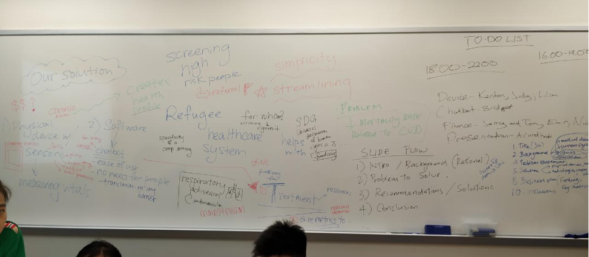
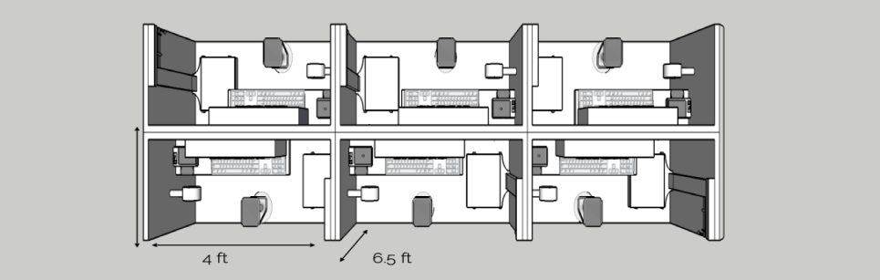
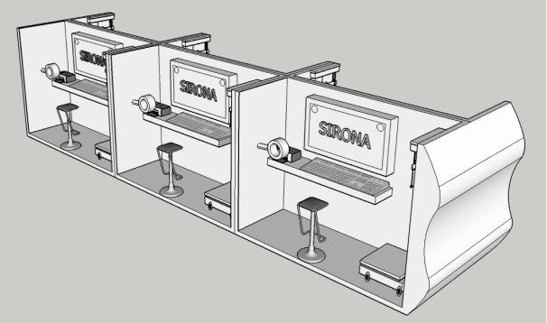

Decrease the burden on healthcare personnel created by the influx of refugees through streamlining screening and diagnosis of cardiovascular disease (CVD) in detention camps.
This was a group project in which I was the team lead. The other team members were Kenton Kwok (Hong Kong), Emir Lise (Turkey), Nicole Chiu (Hong Kong), Fan Yi Ni (China), Lillian Huang (China) and Jerry L (Hong Kong).
This project was developed and presented at the International Symposium on STEM Education (2019) as members of The University of Hong Kong’s Academy for The Talented.
I received the Innovator of the Year Award from my high school for the project.
Refugees will be screened and be given an individual medical profile, complete with details like country of origin, initial ailments, resting levels of cholesterol, glucose, temperature, pulse and blood oxygen( SpO2). A chatbot will be used to screen these diseases, along with physical devices with sensors.
The screening station is made of lightweight materials and is designed to be dismantle-able and portable. On entering the camp, the refugees create a medical profile in these screening stations , with the help of the chatbot. This data is stored in the cloud and can be used to determine the overall healthcare facilities and number of personnel in every camp. Every station contains tactile indicators in embossed English and Turkish, as well as circular relief patterns to indicate the order of use for the user.
 The chatbot is used to guide the user throughout the process so that it requires the minimal intervention of medical personnel.
With a minimalist UI and the option of choosing between English, Turkish, and Arabic. An additional Kurdish and French setting can be used depending on the location.
In addition to tactile indicators and the text on the screen, it also reads out the instructions in the chosen language, for those who are visually-impaired and cannot read braille.
The data collected will be used to create health profiles aimed to sent to governments for funds, while maintaining the privacy of the patients. After evaluation, the refugees are categorised into high and low risk groups, and then the limited resources shall be prioritised.